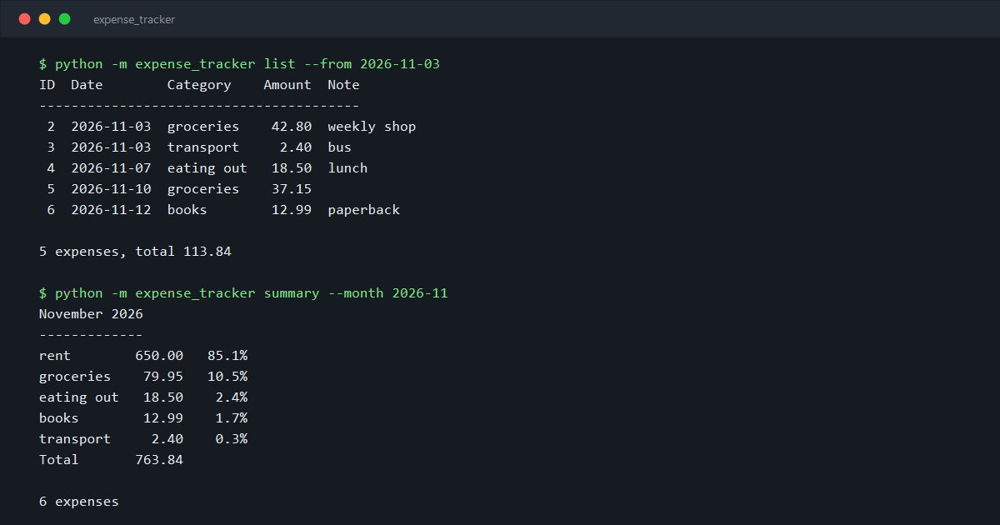
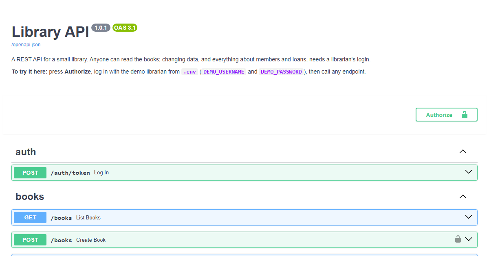

Themis Sarafidis
Code, Bug, Debug, Repeat!
Software engineer with experience in backend development, machine learning and API testing. My most familiar languages are Python and Java, paired with Docker and GitHub Actions as everyday tools. Favorite hobby is observing 'bugs' (Not really) and data analytics.
Featured projects
-

Expense Tracker CLI
Complete
A modular command-line expense tracker with monthly reports and CSV export.
-

Tabular Prediction with Exploratory Analysis
Complete
Predicts whether a person earns above 50K from census data: cleaning, a scikit-learn feature pipeline, three models compared with cross-validation, and an error analysis.
-

Library REST API with Database
Complete
A REST API for a small library: books, members and loans in PostgreSQL, with validation, paging, token login and an OpenAPI page.